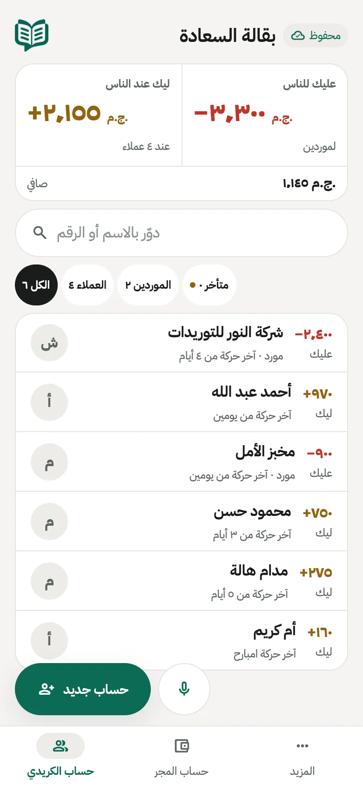
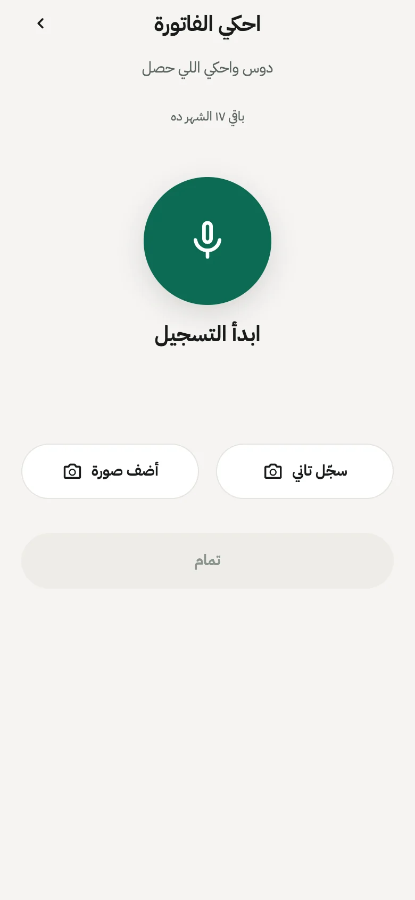

You say what happened, in your own words. Bayan writes the shop ledger after you confirm.
For small shops in Egypt, on Android and iOS, and it works offline.


The notebook stays on the counter.
Credit is a name and a number in a paper notebook. It does not remind anyone, it does not total the page, and it does not leave with you. If the book stays at the shop, the balance stays at the shop.
Bayan keeps the habit and leaves the paper. You tell it what happened. It drafts the entry. Nothing is saved until you confirm the person and the amount.
You can see who owes you, and whom you owe.
Each customer and each supplier has a running balance. You add or edit a transaction, and you can attach a photo.
You share a statement as a PDF, an image, or text, and you can send it on WhatsApp. You can send a WhatsApp payment reminder now, or schedule one.
Money in and money out share one cashbook.
You record money in and money out with categories, on a keypad with a calculator. You attach a receipt photo and issue a receipt that carries the store name and logo.
Reports export to PDF or text. When you close a period, Bayan keeps it in an archive.

You speak. Bayan drafts. You decide what is saved.
Speak, or photograph an invoice, in Egyptian Arabic. Bayan drafts the invoice or the cashbook entry.
You confirm the contact and the entry before anything is saved. The free tier includes 20 assistant requests a month.
-
1 · You say
بضاعة لمحمد بخمسمائة جنيه
-
2 · Bayan drafts
- Type
- Credit
- Contact
- Mohamed
- Amount
- 500 EGP
Draft. Not saved yet.
-
3 · You confirm
You pick the right Mohamed and tap confirm. Only then is the entry saved.
An illustration, not a saved entry.

The entry is saved on the phone before it reaches the network.
-
On the phone first
Every entry is saved on the device before any network.
-
Then it syncs
When there is a connection, Bayan syncs. When there is not, you keep working.
-
You can see the backup
Each area shows its own backup status.
Sign-in is a phone number. The lock is a PIN.
- Sign-in
- A phone number, then a one-time code.
- App lock
- You can require a PIN to open Bayan.
- Receipts
- The store name and logo appear on receipts.
- Language
- Arabic is the default. English, French, and Turkish are included.
- Currency
- Set per store. EGP is the default.

Questions before you start.
Can I download it now?
Not yet. Bayan is not on the public app stores. Ask for early access with the form below or on WhatsApp.
Which phones does it run on?
Android and iOS.
Does it work without internet?
Yes. Every entry is saved on the phone first, and Bayan syncs when there is a connection.
Can Bayan save something without me?
No. The assistant only prepares a draft. You choose the contact and confirm, and only then is the entry saved.
Can I take my data out?
Statements and reports export to PDF, an image, or text, and you can send them on WhatsApp.
Bayan is built by Qcore.
Bayan is our app for small merchants in Egypt. The same team builds custom mobile apps for field work, warehouses, attendance, and approvals, on the operation you already run.
If you need an app of your own, start with a conversation.
Early access starts with a message.
Bayan is not on the public app stores yet. Leave your details and we will message you on WhatsApp.